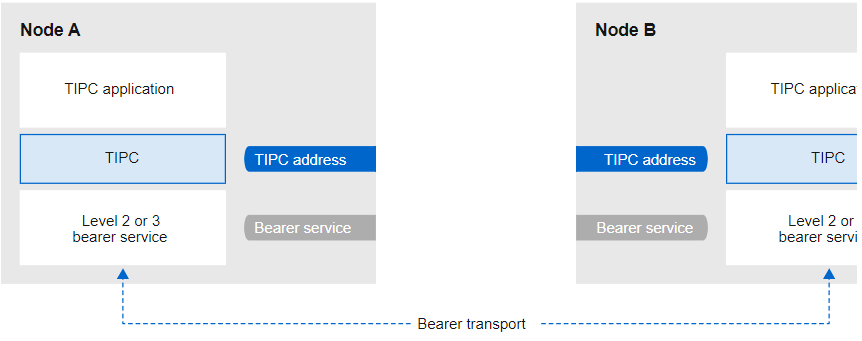

第55章 使用 BPF 编译器集合进行网络追踪
本章解释了 BPF 编译器集合(BCC)是什么，如何安装 BCC，以及如何使用 bcc-tools 软件包提供的预创建的脚本来执行不同的网络追踪操作。所有这些脚本都支持 --ebpf 参数，来显示工具上传到内核的 eBPF 代码。您可以使用这些代码了解更多有关编写 eBPF 脚本的信息。
55.1.BCC 介绍
BPF Compiler Collection（BCC）是一个库，可帮助创建扩展的 Berkeley Packet Filter（eBPF）程序。eBPF 程序的主要工具是在不需要额外的开销或存在安全问题的情况下，分析操作系统性能和网络性能。
BCC 不再需要用户了解 eBPF 的技术详情，并提供了许多开箱即用的工具，如带有预先创建的 eBPF 程序的 bcc-tools 软件包。
eBPF 程序会在事件中触发，如磁盘 I/O、TCP 连接以及进程创建。程序不太可能导致内核崩溃、循环或者变得无响应，因为它们在内核的安全性虚拟机中运行。
55.2.安装 bcc-tools 软件包
本节论述了如何安装 bcc-tools 软件包，该软件包还会将 BPF Compiler Collection (BCC) 库作为依赖项安装。
流程
-
安装 bcc-tools ：
BCC 工具安装在 /usr/share/bcc/tools/ 目录中。# yum install bcc-tools -
（可选）检查工具：
上表中的 doc 目录包含每个工具的文档。# ll /usr/share/bcc/tools/ ... -rwxr-xr-x. 1 root root 4198 Dec 14 17:53 dcsnoop -rwxr-xr-x. 1 root root 3931 Dec 14 17:53 dcstat -rwxr-xr-x. 1 root root 20040 Dec 14 17:53 deadlock_detector -rw-r--r--. 1 root root 7105 Dec 14 17:53 deadlock_detector.c drwxr-xr-x. 3 root root 8192 Mar 11 10:28 doc -rwxr-xr-x. 1 root root 7588 Dec 14 17:53 execsnoop -rwxr-xr-x. 1 root root 6373 Dec 14 17:53 ext4dist -rwxr-xr-x. 1 root root 10401 Dec 14 17:53 ext4slower ...
55.3.显示添加到内核的接受队列中的 TCP 连接
内核在 TCP 3 向握手中接收 ACK 数据包后，内核会将来自 SYN 队列的连接移到 accept 队列，直到连接的状态变为 ESTABLISHED。因此，只有成功的 TCP 连接才能在此队列中看到。
tcpaccept 工具使用 eBPF 特性显示内核添加到 accept 队列的所有连接。该工具是轻量级的，因为它跟踪内核的 accept（） 函数，而不是捕获和过滤数据包。例如，使用 tcpaccept 进行常规故障排除，来显示服务器已接受的新连接。
流程
-
输入以下命令来启动对内核 accept 队列的追踪：
每次内核接受一个连接时，tcpaccept 都会显示连接的详情。# /usr/share/bcc/tools/tcpaccept PID COMM IP RADDR RPORT LADDR LPORT 843 sshd 4 192.0.2.17 50598 192.0.2.1 22 1107 ns-slapd 4 198.51.100.6 38772 192.0.2.1 389 1107 ns-slapd 4 203.0.113.85 38774 192.0.2.1 389 ... -
按 Ctrl+C 停止追踪过程。
56.4.追踪出去的 TCP 连接尝试
tcpconnect 工具使用 eBPF 特性来跟踪出去的 TCP 连接尝试。该工具的输出还包括失败的连接。
tcpconnect 工具是轻量级的，因为它只跟踪内核的 connect（） 函数，而不是捕获和过滤数据包。
流程
-
输入以下命令启动显示所有传出连接的追踪过程：
每次内核处理一个出去的连接时，tcpconnect 都会显示连接的详情。# /usr/share/bcc/tools/tcpconnect PID COMM IP SADDR DADDR DPORT 31346 curl 4 192.0.2.1 198.51.100.16 80 31348 telnet 4 192.0.2.1 203.0.113.231 23 31361 isc-worker00 4 192.0.2.1 192.0.2.254 53 ... -
按 Ctrl+C 停止追踪过程。
55.5.测量出站 TCP 连接的延迟
TCP 连接延迟是建立连接所需的时间。这通常涉及内核 TCP/IP 处理和网络往返时间，而不是应用程序运行时。
tcpconnlat 工具使用 eBPF 特性来测量发送 SYN 数据包和接收响应数据包之间的时间。
流程
-
开始测量出站连接的延迟：
每次内核处理一个出去的连接时，tcpconnlat 都会在内核接收响应数据包后显示连接的详细信息。# /usr/share/bcc/tools/tcpconnlat PID COMM IP SADDR DADDR DPORT LAT(ms) 32151 isc-worker00 4 192.0.2.1 192.0.2.254 53 0.60 32155 ssh 4 192.0.2.1 203.0.113.190 22 26.34 32319 curl 4 192.0.2.1 198.51.100.59 443 188.96 ... -
按 Ctrl+C 停止追踪过程。
55.6.显示被内核丢弃的 TCP 数据包和片段详情
tcpdrop 工具使管理员能够显示内核所丢弃的 TCP 数据包和段的详情。使用这个实用程序调试丢弃数据包的高速率，以便远程系统发送基于计时器的重新传输。释放数据包和片段的高速率可能会影响服务器的性能。
tcpdrop 工具使用 eBPF 特性，而不是捕获和过滤资源密集型的数据包，来直接从内核检索信息。
流程
-
输入以下命令来显示丢弃 TCP 数据包和片段详情：
每次内核丢弃 TCP 数据包和段时，tcpdrop 都会显示连接的详情，包括导致软件包丢弃的内核堆栈追踪。# /usr/share/bcc/tools/tcpdrop TIME PID IP SADDR:SPORT > DADDR:DPORT STATE (FLAGS) 13:28:39 32253 4 192.0.2.85:51616 > 192.0.2.1:22 CLOSE_WAIT (FIN|ACK) b'tcp_drop+0x1' b'tcp_data_queue+0x2b9' ... 13:28:39 1 4 192.0.2.85:51616 > 192.0.2.1:22 CLOSE (ACK) b'tcp_drop+0x1' b'tcp_rcv_state_process+0xe2' ... -
按 Ctrl+C 停止追踪过程。
55.7.追踪 TCP 会话
tcplife 工具使用 eBPF 跟踪打开和关闭的 TCP 会话，并打印一行输出来总结每一个会话。管理员可以使用 tcplife 来识别连接和传输的流量数。
本节中的示例描述了如何显示到端口 22 (SSH)的连接，以检索以下信息：
- 本地进程 ID（PID）
- 本地进程名称
- 本地 IP 地址和端口号
- 远程 IP 地址和端口号
- 接收和传输的流量的数量（以 KB 为单位）。
- 连接处于活跃状态的时间（毫秒）
流程
-
输入以下命令来开始追踪到本地端口 22 的连接：
每次关闭连接时，tcplife 都会显示连接的详情。/usr/share/bcc/tools/tcplife -L 22 PID COMM LADDR LPORT RADDR RPORT TX_KB RX_KB MS 19392 sshd 192.0.2.1 22 192.0.2.17 43892 53 52 6681.95 19431 sshd 192.0.2.1 22 192.0.2.245 43902 81 249381 7585.09 19487 sshd 192.0.2.1 22 192.0.2.121 43970 6998 7 16740.35 ... -
按 Ctrl+C 停止追踪过程。
55.8.追踪 TCP 重新传输
tcpretrans 工具显示有关 TCP 重新传输的详细信息，如本地和远程的 IP 地址和端口号，以及重新传输时 TCP 的状态。
该工具使用 eBPF 功能，因此开销非常低。
流程
-
使用以下命令来显示 TCP 重新传输详情：
每次内核调用 TCP 重新传输函数时，tcpretrans 都会显示连接的详情。# /usr/share/bcc/tools/tcpretrans TIME PID IP LADDR:LPORT T> RADDR:RPORT STATE 00:23:02 0 4 192.0.2.1:22 R> 198.51.100.0:26788 ESTABLISHED 00:23:02 0 4 192.0.2.1:22 R> 198.51.100.0:26788 ESTABLISHED 00:45:43 0 4 192.0.2.1:22 R> 198.51.100.0:17634 ESTABLISHED ... -
按 Ctrl+C 停止追踪过程。
55.9.显示 TCP 状态更改信息
在 TCP 会话中，TCP 状态会改变。tcpstates 工具使用 eBPF 功能跟踪这些状态变化，并打印包括每个状态持续时间的详细信息。例如，使用 tcpstates 来确定连接是否在初始化状态中花费了太多时间。
流程
-
使用以下命令开始追踪 TCP 状态更改：
每次连接改变其状态时，tcpstates 都会显示一个新行，其中包含更新的连接详情。 如果多个连接同时改变了其状态，请使用第一列中的套接字地址(SKADDR)来确定哪些条目属于同一个连接。# /usr/share/bcc/tools/tcpstates SKADDR C-PID C-COMM LADDR LPORT RADDR RPORT OLDSTATE -> NEWSTATE MS ffff9cd377b3af80 0 swapper/1 0.0.0.0 22 0.0.0.0 0 LISTEN -> SYN_RECV 0.000 ffff9cd377b3af80 0 swapper/1 192.0.2.1 22 192.0.2.45 53152 SYN_RECV -> ESTABLISHED 0.067 ffff9cd377b3af80 818 sssd_nss 192.0.2.1 22 192.0.2.45 53152 ESTABLISHED -> CLOSE_WAIT 65636.773 ffff9cd377b3af80 1432 sshd 192.0.2.1 22 192.0.2.45 53152 CLOSE_WAIT -> LAST_ACK 24.409 ffff9cd377b3af80 1267 pulseaudio 192.0.2.1 22 192.0.2.45 53152 LAST_ACK -> CLOSE 0.376 ... -
按 Ctrl+C 停止追踪过程。
55.10. 聚合发送到特定子网的 TCP 流量
tcpsubnet 工具汇总并合计了本地主机发往子网的 IPv4 TCP 流量，并按固定间隔显示输出。该工具使用 eBPF 功能来收集并总结数据，以减少开销。
默认情况下，tcpsubnet 为以下子网汇总流量：
- 127.0.0.1/32
- 10.0.0.0/8
- 172.16.0.0/12
- 192.0.2.0/24/16
- 0.0.0.0/0
请注意，最后一个子网(0.0.0.0/0)是一个全包括选项。tcpsubnet 工具计算与这个全包括条目中前四个不同的子网的所有流量。
按照以下流程计算 192.0.2.0/24 和 198.51.100.0/24 子网的流量。到其他子网的流量将在 0.0.0.0/0 全包括子网条目中跟踪。
流程
-
开始监控发送到 192.0.2.0/24、198.51.100.0/24 以及其他子网的流量数：
这个命令以字节为单位显示指定子网每秒一次的流量。# /usr/share/bcc/tools/tcpsubnet 192.0.2.0/24,198.51.100.0/24,0.0.0.0/0 Tracing... Output every 1 secs. Hit Ctrl-C to end [02/21/20 10:04:50] 192.0.2.0/24 856 198.51.100.0/24 7467 [02/21/20 10:04:51] 192.0.2.0/24 1200 198.51.100.0/24 8763 0.0.0.0/0 673 ... -
按 Ctrl+C 停止追踪过程。
55.11.通过 IP 地址和端口显示网络吞吐量
tcptop 工具以 KB 为单位显示主机发送并接收的 TCP 流量。这个报告会自动刷新并只包含活跃的 TCP 连接。该工具使用 eBPF 功能，因此开销非常低。
流程
-
要监控发送和接收的流量，请输入：
命令的输出只包括活跃的 TCP 连接。如果本地或者远程系统关闭了连接，则该连接在输出中不再可见。# /usr/share/bcc/tools/tcptop 13:46:29 loadavg: 0.10 0.03 0.01 1/215 3875 PID COMM LADDR RADDR RX_KB TX_KB 3853 3853 192.0.2.1:22 192.0.2.165:41838 32 102626 1285 sshd 192.0.2.1:22 192.0.2.45:39240 0 0 ... -
按 Ctrl+C 停止追踪过程。
55.12.追踪已建立的 TCP 连接
tcptracer 工具跟踪连接、接受和关闭 TCP 连接的内核函数。该工具使用 eBPF 功能，因此开销非常低。
流程
-
使用以下命令启动追踪过程：
每当内核连接、接受或关闭连接时，tcptracer 都会显示连接的详情。# /usr/share/bcc/tools/tcptracer Tracing TCP established connections. Ctrl-C to end. T PID COMM IP SADDR DADDR SPORT DPORT A 1088 ns-slapd 4 192.0.2.153 192.0.2.1 0 65535 A 845 sshd 4 192.0.2.1 192.0.2.67 22 42302 X 4502 sshd 4 192.0.2.1 192.0.2.67 22 42302 ... -
按 Ctrl+C 停止追踪过程。
55.13.追踪 IPv4 和 IPv6 侦听请求
solisten 工具追踪所有 IPv4 和 IPv6 侦听请求。它跟踪监听请求，包括最终失败或者不接受连接的监听程序。当程序要侦听 TCP 连接时，程序会追踪内核调用的功能。
流程
-
输入以下命令启动显示所有监听 TCP 尝试的追踪过程：
# /usr/share/bcc/tools/solisten PID COMM PROTO BACKLOG PORT ADDR 3643 nc TCPv4 1 4242 0.0.0.0 3659 nc TCPv6 1 4242 2001:db8:1::1 4221 redis-server TCPv6 128 6379 :: 4221 redis-server TCPv4 128 6379 0.0.0.0 .... -
按 Ctrl+C 停止追踪过程。
55.14.软中断的服务时间概述
softirqs 工具总结了服务软中断（soft IRQ）所花费的时间，并将这个时间显示为总计或直方图分布。这个工具使用 irq:softirq_enter 和 irq:softirq_exit 内核追踪点，是一个稳定的追踪机制。
流程
-
输入以下命令启动追踪 soft irq 事件时间：
# /usr/share/bcc/tools/softirqs Tracing soft irq event time... Hit Ctrl-C to end. ^C SOFTIRQ TOTAL_usecs tasklet 166 block 9152 net_rx 12829 rcu 53140 sched 182360 timer 306256 -
按 Ctrl+C 停止追踪过程。
第56章 TIPC入门
透明进程间通信(TIPC)（也称为 集群域套接字）是用于集群范围操作的进程间通信(IPC)服务。
在高可用性和动态集群环境中运行的应用程序有特殊需要。集群中的节点数量可能会有所不同，路由器可能会失败，且出于负载均衡的考虑，功能也可以移到集群中的不同节点。TIPC 可最大程度降低应用程序开发人员处理此类问题的工作，并尽可能以正确和最佳的方式处理它们。另外，TIPC 比一般协议（如 TCP）提供效率更高且容错的通讯。
56.1. TIPC 的构架
TIPC 是使用 TIPC 和数据包传输服务(bearer)的应用程序之间的一个层，横跨传输层、网络层和信令链路层。然而，TIPC 可以使用不同的传输协议作为 bearer，这样 TCP 连接就可以充当 TIPC 信号连接的 bearer。
TIPC 支持以下 bearer:
- Ethernet
- InfiniBand
- UDP 协议
TIPC 提供了在 TIPC 端口间可靠传送信息，这是所有 TIPC 通讯的端点。
以下是 TIPC 构架图： 
56.2.系统引导时载入 tipc 模块
在使用 TIPC 协议前，请加载 tipc 内核模块。本节介绍如何在系统引导时配置 OpenCloudOS 自动载入这个模块。
流程
-
使用以下内容创建 /etc/modules-load.d/tipc.conf 文件：
tipc -
重启 systemd-modules-load 服务，以在不重启系统的情况下加载模块：
# systemctl start systemd-modules-load
验证
-
使用以下命令验证 RHEL 是否已载入 tipc 模块：
# lsmod | grep tipc tipc 311296 0
如果命令没有显示 tipc 模块的条目，则说明 OpenCloudOS 没有加载它。
56.3.创建 TIPC 网络
注意，以下命令只临时配置 TIPC 网络。要在节点上永久配置 TIPC，在脚本中使用此流程的命令，并将 OpenCloudOS 配置为在系统引导时执行该脚本。
前提条件
- tipc 模块已加载。
流程
-
可选：设置一个唯一的节点身份，如 UUID 或节点的主机名：
身份可以是任何由最多 16 个字母和数字组成的唯一字符串。 您不能在此步骤后设置或改变身份。# tipc node set identity host_name -
添加一个 bearer。例如，要将 Ethernet 用作介质，并将 enp0s1 设备用作物理 bearer 设备，请输入：
# tipc bearer enable media eth device enp1s0 -
可选： 要获得冗余和更好的性能，请使用上一步中的命令附加更多 bearer。您可以配置最多三个 bearer，但在同一介质上不能超过两个。
-
在应该加入 TIPC 网络的每个节点中重复前面的所有步骤。
验证
-
显示集群成员的链接状态：
此输出表示，节点 5254006b74be 上的 bearer enp1s0 和节点 525400df55d1 上的 bearer enp1s0 之间的链接为 up。# tipc link list broadcast-link: up 5254006b74be:enp1s0-525400df55d1:enp1s0: up -
显示 TIPC 发布表：
服务类型为 0 的两个条目表示两个节点是这个集群的成员。 服务类型为 1 的条目代表内置的拓扑服务跟踪服务。 服务类型为 2 的条目显示从发布节点看到的链接。范围限制 3741353223 代表十进制格式表示的对等端点的地址（基于节点身份的唯一 32 位哈希值）。# tipc nametable show Type Lower Upper Scope Port Node 0 1795222054 1795222054 cluster 0 5254006b74be 0 3741353223 3741353223 cluster 0 525400df55d1 1 1 1 node 2399405586 5254006b74be 2 3741353223 3741353223 node 0 5254006b74be
第57章 使用 nm-cloud-setup 在公有云中自动配置网络接口
通常，虚拟机(VM)只有一个可由 DHCP 配置的接口。但是，一些虚拟机在一个无法由 DHCP 配置的接口中可能有多个网络接口、IP 地址和 IP 子网。另外，管理员可以在机器运行时重新配置网络。nm-cloud-setup 工具从云服务提供商的元数据服务器自动检索配置信息，并更新公有云中虚拟机的网络配置。
57.1.配置和预部署 nm-cloud-setup
要在公有云中启用和配置网络接口，请运行 nm-cloud-setup 作为计时器和服务。以下流程描述了如何对 Amazon EC2 使用 nm-cloud-setup 。
前提条件
- 存在网络连接。
- 连接使用 DHCP。 默认情况下，NetworkManager 会创建一个使用 DHCP 的连接配置文件。如果因为您在 /etc/NetworkManager/NetworkManager.conf 中设置了 no-auto-default 参数而没有创建配置文件，请手动创建此初始连接。
流程
-
安装 nm-cloud-setup 软件包：
# yum install NetworkManager-cloud-setup -
为 nm-cloud-setup 服务创建并运行 管理单元文件：
-
使用以下命令开始编辑管理单元文件：
显式启动服务或重启系统，以使配置设置生效，这点非常重要的。# systemctl edit nm-cloud-setup.service -
使用 systemd 管理单元文件来在 nm-cloud-setup 中配置云提供商。例如，要使用 Amazon EC2，请输入：
您可以设置以下环境变量来启用您所使用的云提供商： - 用于 Microsoft Azure 的 NM_CLOUD_SETUP_AZURE - 用于 Amazon EC2(AWS)的 NM_CLOUD_SETUP_EC2 - 用于 Google Cloud Platform(GCP)的 NM_CLOUD_SETUP_GCP - 用于 Alibaba Cloud (Aliyun) 的 NM_CLOUD_SETUP_ALIYUN[Service] Environment=NM_CLOUD_SETUP_EC2=yes -
保存文件并退出编辑器。
-
-
重新载入 systemd 配置：
# systemctl daemon-reload -
启用并启动 nm-cloud-setup 服务：
# systemctl enable --now nm-cloud-setup.service -
启用并启动 nm-cloud-setup 计时器：
# systemctl enable --now nm-cloud-setup.timer